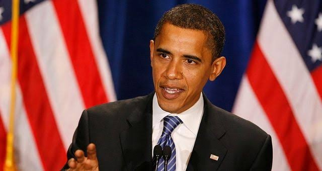

NOTABLE CASES OF PLAGIARISM: CONSEQUENCES AND CROSS-CULTURAL COMPARISONS
A Look At Academic And Professional Misconduct
PLAGIARISM, the act of presenting another's work or ideas as one's own, has far-reaching consequences across academic and professional spheres. The penalties for plagiarism vary significantly depending on the context, the severity of the infringement, and the legal jurisdiction. While the ethical implications are universally condemned, the legal and disciplinary responses differ considerably across countries. This overview examines several notable cases, highlighting the range of punishments and the influence of intellectual property (IP) laws.
EXAMPLES OF PLAGIARISM CASES
- Nigerian President Plagiarizes President Obama

September, Nigerian President Muhammadu Buhari addressed his nation and announced a new push to eliminate “dishonestly, indolence, unbridled corruption and widespread impunity” in the country. Unfortunately for Buhari, it turned out that at least one passage from the speech was plagiarized nearly verbatim by U.S. President Barack Obama. Though Buhari quickly apologized and dismissed the aid who he said was responsible for the plagiarism, the scandal put more than a small crimp in Buhari’s anti-corruption campaign. Fortunately for Buhari, the scandal seems to have largely subsided and, in the end, became little more than a footnote to his career. - Coldplay
According to guitarist Joe Satriani, Coldplay’s song “Vida La Vida” plagiarized from his instrumental “If I Could Fly.” In his case against Coldplay, Satiran demanded compensation for copyright infringement. “With all due respect to Joe Satriani, the resemblance may be unintentional and unconscious; this was as much a surprise to him as it was to us,” Coldplay stated in response to the accusation against them. Dean D. Pregerson, the judge, in this case, halted the trial and ordered that both parties bear their costs and reach an amicable agreement. However, as none of the parties made a statement regarding this matter, it is currently unknown whether or not an agreement was reached.
INTERNATIONAL VARIATIONS IN IP LAWS AND PUNISHMENT
The legal frameworks governing intellectual property rights and plagiarism differ considerably across countries. Some countries have stricter laws and harsher penalties than others. The Berne Convention for the Protection of Literary and Artistic Works provides a minimum standard of protection for authors' rights internationally, but the enforcement and specific penalties vary greatly. For example:
Nature Of The Punishment In Different Countries As Per Their Ip Laws
- India
India has a strong copyright law that protects authors' original works, and plagiarism is illegal - Philippines
The Philippines has a copyright law that criminalizes plagiarism. - Germany
Germany has strict copyright laws and penalties for plagiarism. - France
France has a strong copyright law that protects authors' original works, and plagiarism is illegal. - Pakistan
Pakistan has a copyright law that criminalizes plagiarism. - Spain
Spain has a strong copyright law that protects authors' original works, and plagiarism is illegal. - Indonesia
Indonesia has a copyright law that criminalizes plagiarism.
AVOID PLAGIARISM
TABLE SUMMARIZING POTENTIAL CONSEQUENCES
| SETTING | POTENTIAL CONSEQUENCES |
|---|---|
| Academic | Failing grade,suspension,expulsion,retraction of publication |
| Professional | Job loss, reputational damage, legal action (civil or criminal) |
| Legal (Civil) | Fines, injunctions, damages |
| Legal (Criminal) | Fines, imprisonment |